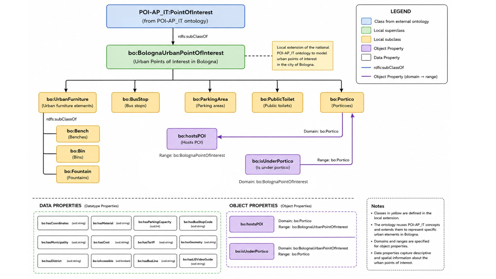

Ontology Extension
Proposta di estensione ontologica locale in Protégé
A seguito dell'analisi dell'ontologia nazionale POI-AP_IT e del confronto con i dataset open data del Comune di Bologna, è emersa la necessità di estendere il vocabolario esistente al fine di rappresentare alcune categorie di punti di interesse urbani non esplicitamente modellate nell'ontologia di riferimento. Per questo motivo è stata progettata e implementata, mediante l'editor Protégé, un'ontologia locale denominata bologna-poi, identificata dall'IRI http://dati.comune.bologna.it/ontology/bologna-poi e basata sul riuso dei concetti definiti nell'ontologia nazionale.
L'estensione è stata realizzata seguendo un approccio incrementale e conservativo, volto a garantire la massima interoperabilità con il modello nazionale. In particolare, è stata introdotta la classe BolognaUrbanPointOfInterest, definita come sottoclasse di PointOfInterest, con il ruolo di superclasse locale per la rappresentazione dei punti di interesse urbani della città di Bologna.
A partire da questa classe sono state definite le principali categorie presenti nei dataset comunali, ovvero UrbanFurniture, BusStop, ParkingArea, PublicToilet e Portico. La classe UrbanFurniture è stata ulteriormente specializzata nelle sottoclassi Bench, Bin e Fountain, al fine di distinguere le diverse tipologie di arredo urbano disponibili nei dati di origine.
Una volta definita la gerarchia delle classi, l'attività si è concentrata sulla modellazione delle proprietà. È stato adottato un principio di riuso sistematico delle proprietà già disponibili nelle ontologie nazionali importate, utilizzando ove possibile elementi quali name, identifier, description, fullAddress, URL e altre proprietà descrittive già consolidate. Solo nei casi in cui il vocabolario esistente non risultasse sufficiente a rappresentare le informazioni contenute nei dataset comunali sono state introdotte nuove datatype properties locali.
Tra queste rientrano, ad esempio, proprietà specifiche per alcune sottoclassi, come BusStopCode, BusLine e BusStopName per le fermate autobus, ParkingCapacity e Tariff per le aree di parcheggio, Material e StructureType per l'arredo urbano, e LISVideoGuide e opens per strutture dotate di informazioni aggiuntive su orari e accessibilità. Per ciascuna proprietà sono stati definiti opportuni domini e range, utilizzando datatypes standard XML Schema quali xsd:string, xsd:integer, xsd:boolean, xsd:date e xsd:anyURI.
Particolare attenzione è stata dedicata anche alla modellazione delle relazioni semantiche tra le entità. A tale scopo sono state introdotte due object properties specifiche. La proprietà hostsPOI è stata definita per rappresentare il fatto che un Portico possa ospitare uno o più punti di interesse urbani. Il dominio della proprietà è stato quindi associato alla classe Portico, mentre il range è stato definito come BolognaUrbanPointOfInterest. In modo complementare, è stata introdotta la proprietà isUnderPortico, utilizzata per esprimere la relazione inversa dal punto di interesse verso il portico sotto il quale esso è collocato. Questa scelta consente di rappresentare esplicitamente una caratteristica distintiva del contesto urbano bolognese, valorizzando il ruolo dei portici come elemento strutturale e spaziale della città.
L'ontologia risultante costituisce quindi un'estensione locale del modello nazionale, capace di preservarne la compatibilità semantica e, allo stesso tempo, di fornire una rappresentazione più dettagliata e aderente alle caratteristiche dei punti di interesse urbani presenti nel territorio comunale di Bologna.

Struttura dell'ontologia locale bologna-poi e relazioni con l'ontologia nazionale POI-AP_IT